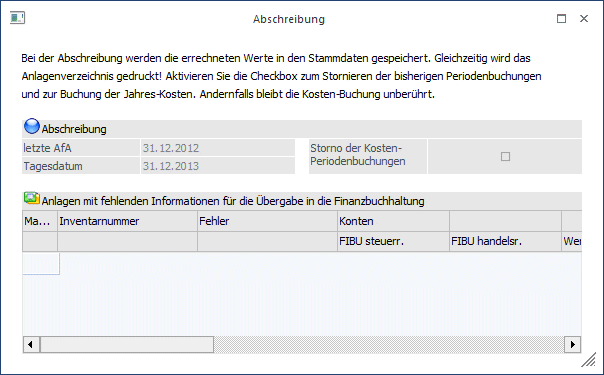
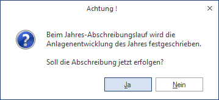
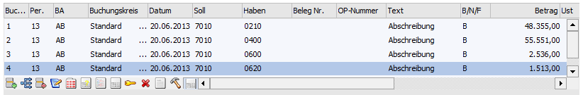
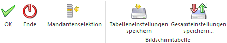
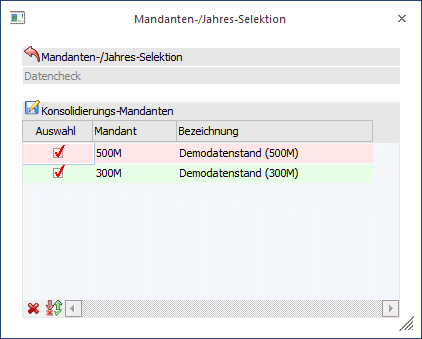
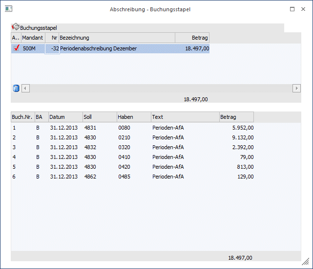

Unter Abschreibung versteht man die Jahresabschreibung, die zum Jahresende berechnet und gebucht wird. Durch die Abschreibung werden alle Buchungen inkl. Abschreibungswerte für das Wirtschaftsjahr festgeschrieben und können nachträglich nicht mehr verändert werden. Im Zuge der Jahresabschreibung werden sämtliche berücksichtigte Werte der Periodenabschreibung storniert.
Es kann wahlweise die steuerrechtliche oder handelsrechtliche Abschreibung in die Finanzbuchhaltung übergeben werden. Die Entscheidung, welche Abschreibung in die FIBU übergeben wird, wird im ANBU-Parameter Bereich Buchen unter Buchungsübergabe anhand des Radiobuttons "steuerrechtlich" oder "handelsrechtlich" vorgenommen.
Für den FIBU-Buchungsstapel der Jahresabschreibung (Stapel -20 Jahresabschreibung) kann der Buchungstext im ANBU-Parameter frei definiert werden. Ist im ANBU-Parameter kein eigener Buchungstext hinterlegt, wird "Abschreibung" als Buchungstext in den FIBU-Buchungsstapel eingetragen.
Im Anlagenjournal ist anhand des Textes ersichtlich, ob die steuerrechtliche oder handelsrechtliche Abschreibung durchgeführt wurde.
Die Abschreibung wird im Menüpunkt
1 Abschluss
1 Abschreibung
durchgeführt.

Beim Aufrufen des Menüpunktes bekommen Sie folgende Informationen angezeigt:
Ø letzte AfA
Informationsfeld, welches angibt, wann der letzte AfA-Lauf vorgenommen wurde. (z. B. 31.12.2012)
Ø Tagesdatum
Das aktuelle Datum erscheint (z. B. 31.12.2013)
In der Tabelle in der unteren Fensterhälfte werden nach einem fehlerhaften AfA-Lauf die Anlagegüter angedruckt, bei denen noch Daten eingetragen werden müssen, um einen korrekten AfA-Lauf zu ermöglichen. Die hier nacherfassten Werte werden automatisch in den Anlagenstamm zurückgeschrieben.
Ø Storno der Kosten-Periodenbuchungen
Mit dieser Checkbox wird gesteuert, ob die bisherigen Kosten-Periodenbuchungen storniert und als Jahres-AfA in die Periode 13 gebucht werden sollen. Wird diese Option nicht aktiviert, bleiben die Periodenbuchungen in der KORE bestehen und es erfolgt keine Jahresbuchung. Wenn im Anlagenparameter die Abfrage "Kosten mit FIBU buchen" inaktiv ist, wird die Checkbox automatisch deaktiviert.
Ø Anlagen mit fehlenden Informationen für die Übergabe in die Finanzbuchhaltung
In der Tabelle in der unteren Fensterhälfte werden nach einem fehlerhaften AfA-Lauf die Anlagegüter angedruckt, bei denen noch Daten eingetragen werden müssen, um einen korrekten AfA-Lauf zu ermöglichen. Die hier nacherfassten Werte werden automatisch in den Anlagenstamm zurückgeschrieben.
Durch Drücken des OK-Buttons starten Sie den AfA-Lauf.
Achtung
Pro Wirtschaftsjahr kann nur ein Jahres-Abschreibungslauf durchgeführt werden!

Mit Durchführung der Jahresabschreibung werden auf dem Drucker parallel dazu das Anlagenverzeichnis und die Buchungsübergabe ausgedruckt und die Werte im Anlagenstamm werden aktualisiert. Außerdem wird eine Buchungsübergabedatei (mit den soeben berechneten Abschreibungsbuchungen) für die Finanzbuchhaltung bereitgestellt. Der Stapel kann dann im Dialog-Stapel gebucht werden. Der Buchungsübergabestapel erhält die Stapelnummer -20.
Da mit Hilfe der Anlagenhistorie jederzeit jedes Wirtschaftsjahr für die Auswertung des Anlagenverzeichnisses errechnet werden kann, kann auch nach dem AfA-Lauf jederzeit das Anlagenverzeichnis auch vom alten Jahr ausgegeben werden (zu Informationszwecken).
Beispiel eines AfA-Buchungsstapels
In der FIBU wird über den Laden-Button der Buchungsstapel geladen.

Erfolgt per Jahresende die Durchführung der Jahresabschreibung, wird der Wert der durchgeführten Periodenabschreibungen storniert und die gesamte Jahresabschreibung neu berechnet.
Buttons

Ø OK
Durch Drücken der F5-Taste bzw. des OK-Buttons wird die Jahresabschreibung durchgeführt, die Buchungsübergabe auf den Drucker/Spooler ausgegeben und der Buchungsstapel -20 in die FIBU übergeben.
Ø Ende
Durch Drücken des Ende-Buttons oder der ESC-Taste wird das Fenster geschlossen.
Ø Mandantenselektion
Über die Mandantenselektion können mehrere Submandanten ausgewählt werden. Es wird für alle ausgewählten Mandanten die Abschreibung durchgeführt und der Buchungsstapel in der Finanzbuchhaltung automatisch verbucht.
Ø Tabelleneinstellungen speichern
Die Spalten einer Tabelle können grundsätzlich an beliebige Positionen verschoben, bzw. in der Breite entsprechend angepasst werden. Durch Anwahl des Buttons "Tabelleneinstellungen speichern" werden die Einstellungen benutzerspezifisch gespeichert und bei dem nächsten Aufruf des Programmpunktes wieder vorgeschlagen.
Ø Gesamteinstellungen speichern
Im Gegensatz zu "Tabelleneinstellungen speichern" können mit "Gesamteinstellungen speichern" mehrere Tabellenaufbauten gespeichert und nach Wunsch geladen werden. Zusätzlich werden Sonderfunktionen der Tabelle (z.B. "Spalte gruppieren") ebenfalls bei der Speicherung bedacht.
Die Submandanten müssen zuvor im WinLine Start über den Menüpunkt
1 Optionen
1 Konsolidierung
1 Einstellungen
als Submandant zu diesem Hauptmandant aktiviert sein.

Wurde der Mandantenselektions-Button in der Abschreibung gedrückt, öffnet sich das Fenster Konsolidierung. In diesem Fenster können die abzuschreibenden Mandanten ausgewählt werden.
Das Bestätigen der Konsolidierung mit OK oder F5 führt die Abschreibung dieser Mandanten aus und öffnet das Fenster Abschreibung-Buchungsstapel, in dem die erstellten Buchungsstapel in einer Tabelle angezeigt werden. In einer zweiten Tabelle werden die Buchungszeilen des ausgewählten Buchungsstapels aufgelistet.

Ein Doppelklick in eine Buchungszeile öffnet das Anlagenverzeichnis mit dem FIBU-Konto dieser Buchung.
Durch den Klick auf die Inventarnummer im Anlagenverzeichnis öffnet sich das Anlagenstammblatt.
Buttons

Ø Buchen
Über den Buchen-Button werden für die ausgewählten Mandanten die Buchungsstapel erstellt, sofort automatisch in der Finanzbuchhaltung verbucht und anschließend gelöscht.
Die Buchungsübergabe und die Anlagenverzeichnisse werden für jeden Mandanten separat in den Spooler oder auf den Drucker ausgegeben.
Ø Ende
Das Fenster wird geschlossen.
Ø Löschen
Über den Löschen-Button können einzelne Buchungsstapel storniert werden. Dabei wird der Buchungsstapel wieder gelöscht und die Periodenabschreibung dieses Mandanten rückgängig gemacht.
Achtung
Die Checkbox "Auswahl" hat für die Funktion des Löschens keine Bedeutung. Die Auswahl ist nur für die Verbuchung der Buchungsstapel gültig. Soll ein Buchungsstapel gelöscht werden, dann muss einmal in diese obere Tabellenzeile geklickt werden um sie zu aktivieren. Es wird der Buchungsstapel gelöscht, dessen Buchungen in der unteren Tabelle aufgelistet werden.
Ø Tabelleneinstellungen speichern
Die Spalten einer Tabelle können grundsätzlich an beliebige Positionen verschoben, bzw. in der Breite entsprechend angepasst werden. Durch Anwahl des Buttons "Tabelleneinstellungen speichern" werden die Einstellungen benutzerspezifisch gespeichert und bei dem nächsten Aufruf des Programmpunktes wieder vorgeschlagen.
Ø Gesamteinstellungen speichern
Im Gegensatz zu "Tabelleneinstellungen speichern" können mit "Gesamteinstellungen speichern" mehrere Tabellenaufbauten gespeichert und nach Wunsch geladen werden. Zusätzlich werden Sonderfunktionen der Tabelle (z.B. "Spalte gruppieren") ebenfalls bei der Speicherung bedacht.
Um verschiedene Abschreibungsmodelle durchzuspielen, ohne die AfA tatsächlich zu buchen wählen Sie den Menüpunkt
1 AfA-Vorschau
oder Sie können auch das
1 Anlagenverzeichnis
beliebig oft ausdrucken bevor der endgültige Abschreibungslauf durchgeführt wird.
Hinweis
Gilt nur für österreichische Mandanten, wenn die vorzeitige AfA in Anspruch genommen wird.
Die Buchungen für die vorzeitige AfA bei der Abschreibung automatisch erstellt werden. Dazu gibt es in den ANBU-Parametern
1 WinLine Start
1 Parameter
1 Applikations-Parameter
1 ANBU-Parameter
drei neue Felder für die automatische Verbuchung. Erst wenn die Konten in den Parametern eingetragen sind und die Jahresabschreibungen gefahren ist, werden die Bewertungsbuchungen in den FIBU-Stapel erstellt.
Achtung - Bei Beginn der Anlagenbuchhaltung nicht im ältesten, offenen Wirtschaftsjahr
Beispiel: Im Jahr 2013 wird mit der ANBU begonnen und die Anlagegüter mit den entsprechenden Vortragswerten per 01.01.2013 erfasst oder importiert, obwohl noch das Jahr 2012 offen ist. Wenn im alten Wirtschaftsjahr 2012 die Historienwartung angewählt wird oder ein Anlagegut mit "OK" gespeichert wird, wird auch eine AfA-Zeile für 2012 in der Entwicklung angelegt.
Der Buchwert wird hierbei aber nicht verändert und die ANBU- Werte sind nicht mehr korrekt. Die Historienwartung wird ab dem ersten, ältesten Wirtschaftsjahr ohne Jahresabschreibung durchgeführt. Daher muss, wenn die ANBU nicht im ältesten, offenen Wirtschaftsjahr eines Mandanten eingerichtet wird, für das alte Jahr erst die Jahresabschreibung durchgeführt werden - auch wenn keine Werte dabei berechnet werden. Wichtig ist, dass das Datum für die letzte FIBU-AfA im Anlagenparameter gespeichert wird.